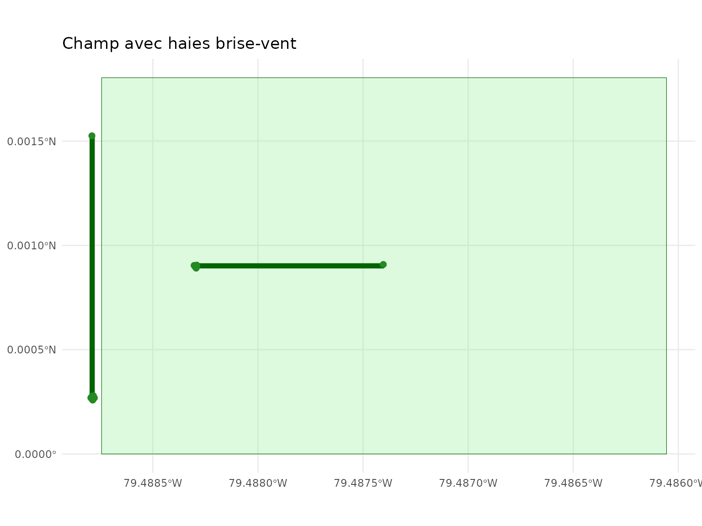
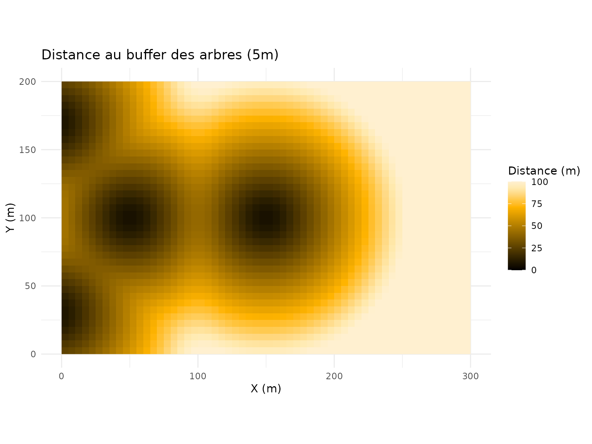
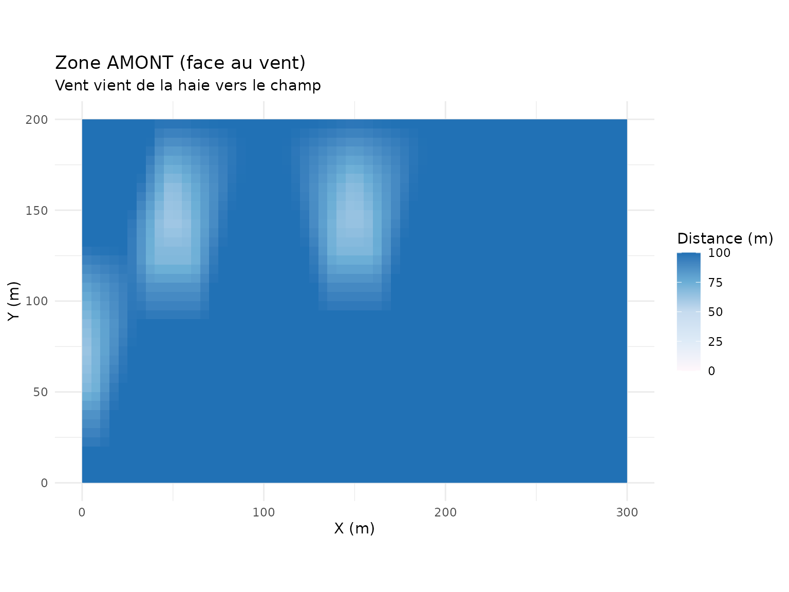
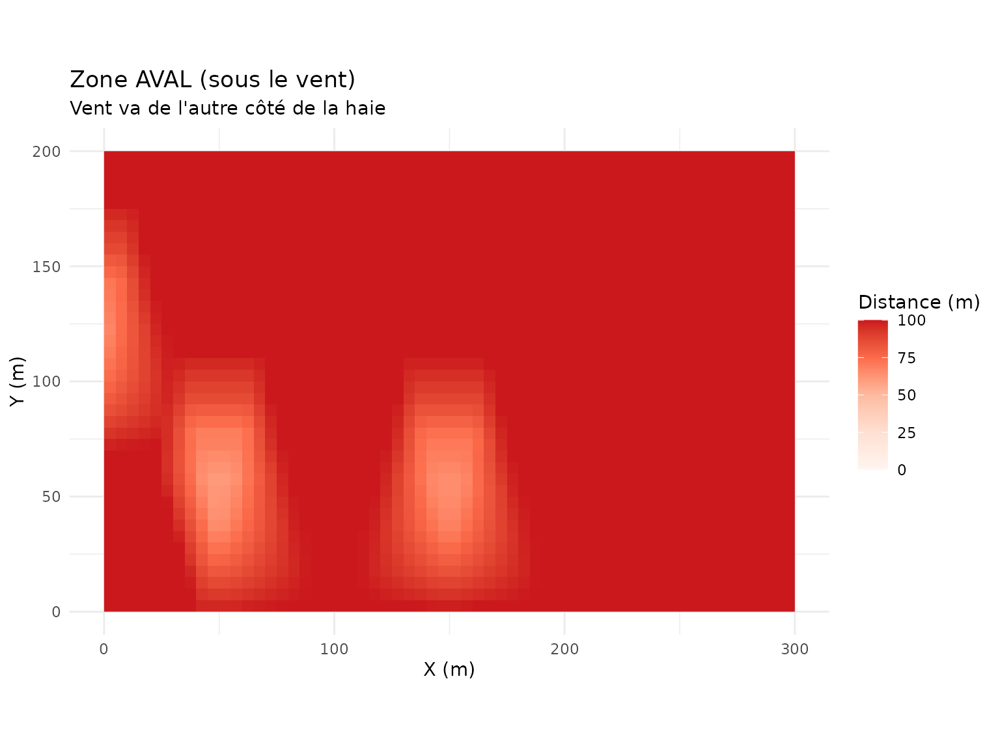
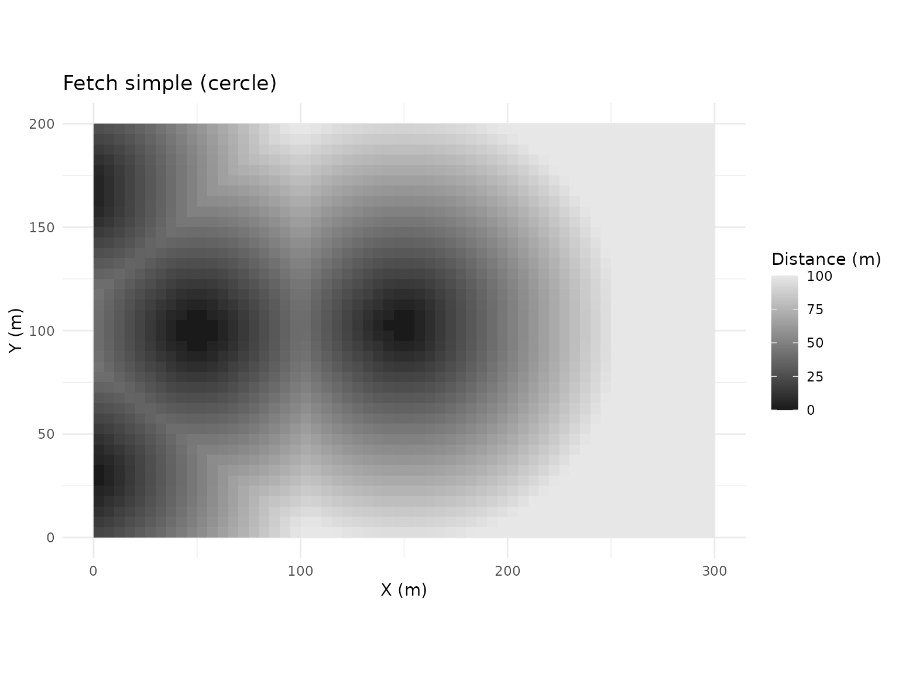
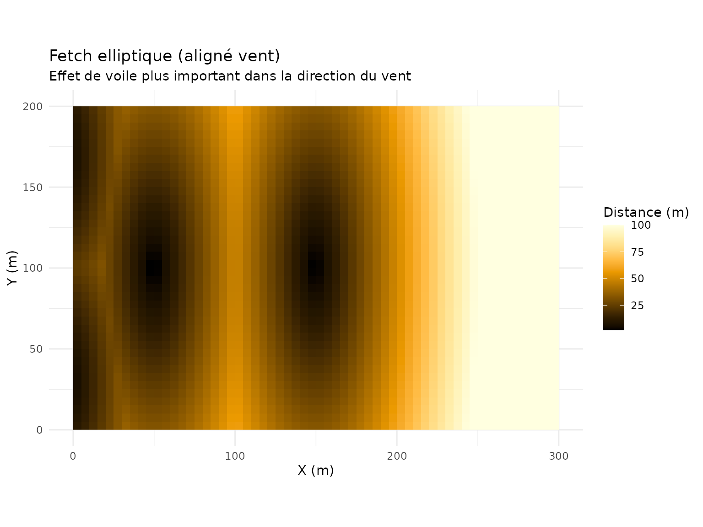
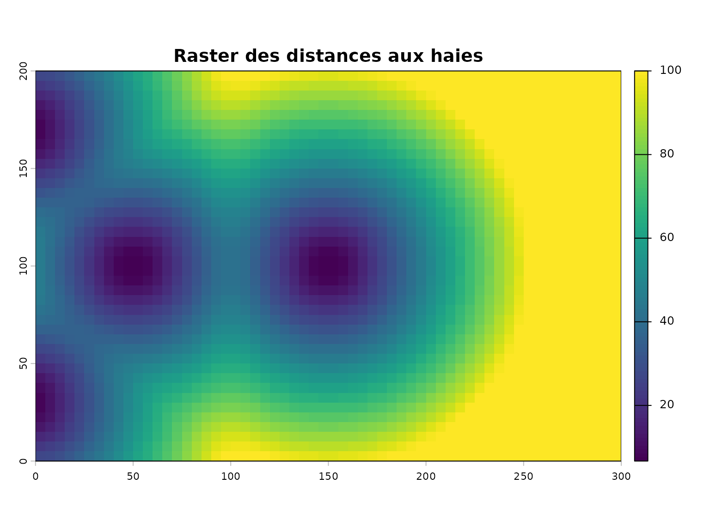
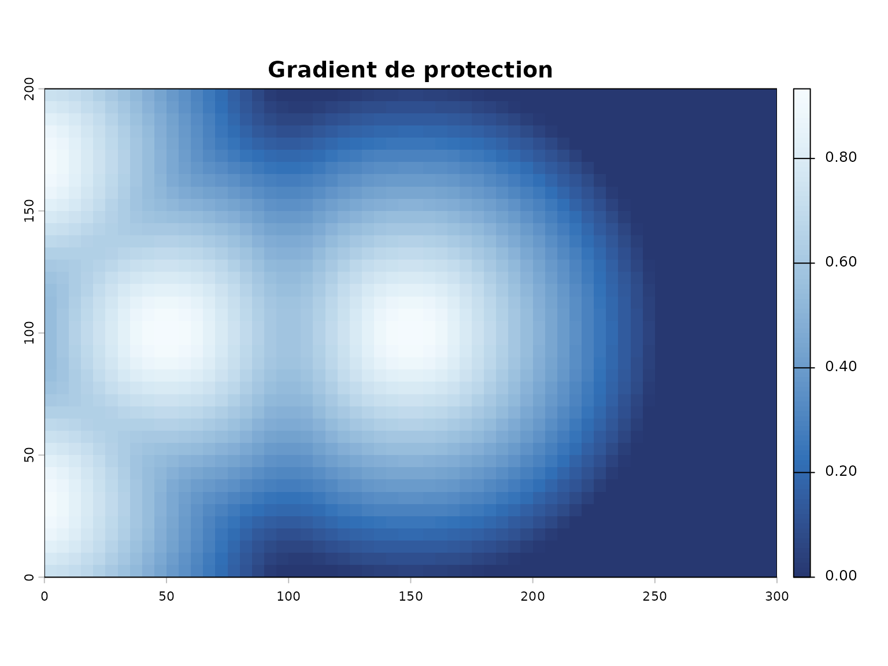
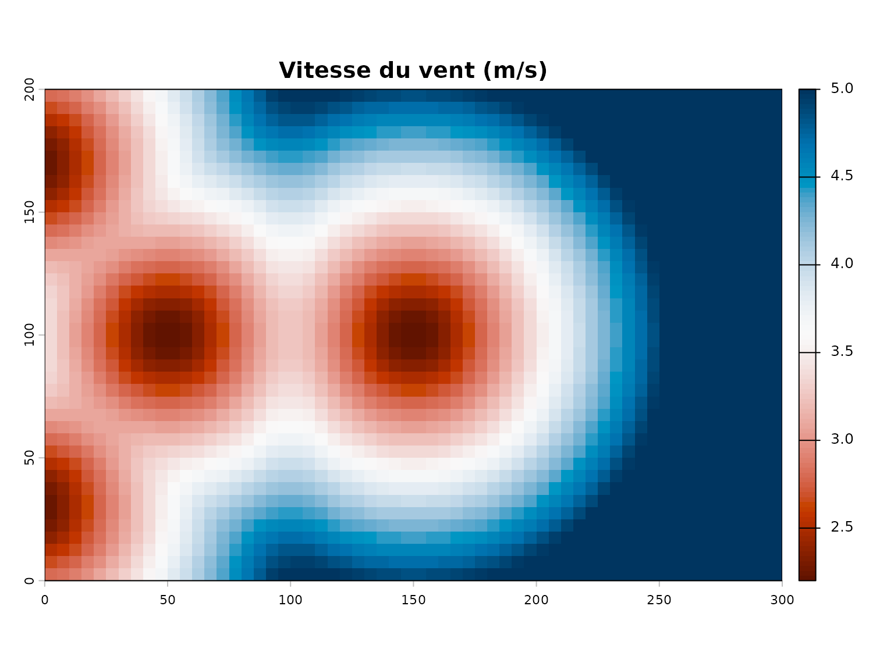
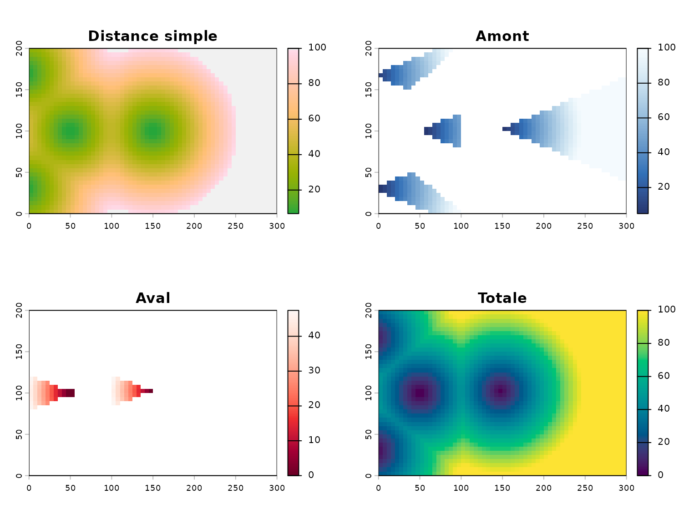

Detection et analyse des haies brise-vent
Source:vignettes/haies-brise-vent.Rmd
haies-brise-vent.RmdIntroduction
Les haies brise-vent jouent un rôle important dans la protection des
cultures contre le vent. Ce guide présente les fonctions du package
covariablechamps pour détecter, classifier et analyser les
haies à partir des données LiDAR.
Données d’exemple
Pour cet article, nous créons des données synthétiques représentant un champ avec des haies.
# Créer un champ
coords_champ <- matrix(c(0, 0, 300, 0, 300, 200, 0, 200, 0, 0), ncol = 2, byrow = TRUE)
champ <- sf::st_polygon(list(coords_champ))
champ <- sf::st_sfc(champ, crs = 32618)
champ <- sf::st_sf(geometry = champ)
# Créer des haies comme lignes droites
haie_ouest <- sf::st_sfc(
sf::st_linestring(matrix(c(-5, 30, -5, 170), ncol = 2, byrow = TRUE)),
crs = 32618
)
haie_interieure <- sf::st_sfc(
sf::st_linestring(matrix(c(50, 100, 150, 100), ncol = 2, byrow = TRUE)),
crs = 32618
)
# Créer un sf avec deux géométries
haies <- sf::st_sf(
id = 1:2,
geometry = c(haie_ouest, haie_interieure)
)
# Convertir les haies en POINTS pour les fonctions de distance
set.seed(42)
points_haie <- lapply(1:2, function(i) {
g <- haies$geometry[[i]]
coords <- sf::st_coordinates(g)
n <- max(3, floor(sf::st_length(g) / 10))
if (n > 1) {
seq_idx <- seq(1, nrow(coords), length.out = n)
} else {
seq_idx <- 1
}
pts <- coords[seq_idx, , drop = FALSE]
data.frame(
id = rep(i, nrow(pts)),
x = pts[, 1] + rnorm(nrow(pts), 0, 0.5),
y = pts[, 2] + rnorm(nrow(pts), 0, 0.5)
)
})
points_haie <- do.call(rbind, points_haie)
arbres_haies <- sf::st_sf(
id = points_haie$id,
geometry = sf::st_sfc(
lapply(1:nrow(points_haie), function(i) {
sf::st_point(c(points_haie$x[i], points_haie$y[i]))
}),
crs = 32618
)
)
ggplot() +
geom_sf(data = champ, fill = "lightgreen", alpha = 0.3, col = "darkgreen") +
geom_sf(data = haies, col = "darkgreen", lwd = 2) +
geom_sf(data = arbres_haies, col = "forestgreen", size = 2) +
ggtitle("Champ avec haies brise-vent") +
theme_minimal()
Étape 1: Calculer les zones de protection
Les haies brise-vent créent des zones de protection dont l’étendue dépend de la hauteur de la haie.
# Direction du vent dominante (en degrés)
direction_vent <- 270 # Vent d'ouest
# Créer un raster de zones de vent à partir des distances
distances_haies <- calculer_distance_arbres(
arbres_sf = arbres_haies,
champ_bbox = champ,
resolution = 5,
buffer_arbre = 5,
max_distance = 100
)
# Visualiser les zones de protection
visualiser_distance_arbres(distances_haies, type = "buffer")
Étape 2: Distance directionnelle (amont/aval)
dist_dir_haies <- calculer_distances_amont_aval(
arbres_sf = arbres_haies,
angle_vent = direction_vent,
champ_bbox = champ,
resolution = 5,
buffer_arbre = 5,
angle_focal = 30,
max_distance = 100
)
viz <- visualiser_distances_vent(dist_dir_haies, type = "comparaison")
viz$amont +
ggtitle("Zone AMONT (face au vent)",
subtitle = "Vent vient de la haie vers le champ") +
theme_minimal()
viz$aval +
ggtitle("Zone AVAL (sous le vent)",
subtitle = "Vent va de l'autre côté de la haie") +
theme_minimal()
Étape 3: Fetch de vent
fetch_haies <- calculer_fetch_vent(
arbres_sf = arbres_haies,
angle_vent = direction_vent,
champ_bbox = champ,
resolution = 5,
max_fetch = 100,
coef_ellipse = 3
)
viz_fetch <- visualiser_fetch(fetch_haies, type = "comparaison")
viz_fetch$simple +
ggtitle("Fetch simple (cercle)") +
theme_minimal()
viz_fetch$elliptique +
ggtitle("Fetch elliptique (aligné vent)",
subtitle = "Effet de voile plus important dans la direction du vent") +
theme_minimal()
Étape 4: Rasterisation pour analyse
Pour des analyses spatiales plus poussées, les zones peuvent être rasterisées.
# La rasterisation utilise le résultat des distances
raster_dist <- distances_haies$distance_buffer
plot(raster_dist, main = "Raster des distances aux haies")
Gradient continu
Le gradient montre la diminution progressive de la protection:
# Créer un gradient de protection (1 = protection max, 0 = pas de protection)
raster_protection <- distances_haies$distance_buffer / distances_haies$max_distance
raster_protection <- 1 - raster_protection
# Visualiser
plot(raster_protection, main = "Gradient de protection",
col = hcl.colors(100, "Blues"))
Étape 5: Simulation de la vitesse du vent
Estimez la réduction de vitesse du vent due aux haies.
# Avec les distances simples
vitesse_simple <- simuler_vitesse_vent_simple(
dist_result = distances_haies,
vitesse_ref = 5,
coef_protection = 0.6
)
# Visualiser directement avec terra
print(terra::plot(vitesse_simple$vitesse, main = "Vitesse du vent (m/s)",
col = hcl.colors(100, "RdBu")))
#> $ext
#> xmin xmax ymin ymax
#> 0 300 0 200
#>
#> $lim
#> xmin xmax ymin ymax
#> 0 300 0 200
#>
#> $add
#> [1] FALSE
#>
#> $axs
#> $axs$las
#> [1] 0
#>
#> $axs$cex.lab
#> [1] 0.8
#>
#> $axs$line.lab
#> [1] 1.5
#>
#> $axs$cex.axis
#> [1] 0.7
#>
#> $axs$mgp
#> [1] 2.00 0.25 0.30
#>
#> $axs$tcl
#> [1] -0.25
#>
#> $axs$side
#> [1] 1 2
#>
#> $axs$tick
#> [1] 1 2
#>
#> $axs$lab
#> [1] 1 2
#>
#>
#> $draw_grid
#> [1] FALSE
#>
#> $leg
#> $leg$sort
#> [1] FALSE
#>
#> $leg$reverse
#> [1] FALSE
#>
#> $leg$digits
#> [1] 1
#>
#> $leg$x
#> [1] "right"
#>
#> $leg$horiz
#> [1] FALSE
#>
#> $leg$ext
#> xmin xmax ymin ymax dx dy
#> 1 306.8182 313.6364 0 200 6.818182 200
#>
#> $leg$user
#> [1] FALSE
#>
#> $leg$size
#> [1] 1 1
#>
#>
#> $all_levels
#> [1] FALSE
#>
#> $lonlat
#> [1] FALSE
#>
#> $asp
#> [1] 1
#>
#> $cols
#> [1] "#611300" "#691600" "#701800" "#771A00" "#7E1D00" "#861F00" "#8D2200"
#> [8] "#952400" "#9C2700" "#A42900" "#AB2C00" "#B32F00" "#BA3100" "#C13500"
#> [15] "#C43D00" "#C74403" "#CA4B1D" "#CD522C" "#D05838" "#D35F42" "#D5654C"
#> [22] "#D76B54" "#DA715C" "#DC7864" "#DE7E6C" "#E08373" "#E1897A" "#E38F81"
#> [29] "#E59588" "#E69A8F" "#E7A095" "#E9A69C" "#EAABA2" "#EBB0A8" "#ECB6AE"
#> [36] "#EDBBB4" "#EEC0BA" "#EFC5C0" "#F0CAC6" "#F1CFCB" "#F1D4D1" "#F2D9D6"
#> [43] "#F3DDDB" "#F4E2E0" "#F4E6E5" "#F5EAE9" "#F6EEED" "#F7F2F1" "#F8F5F5"
#> [50] "#F9F8F8" "#F9F9F9" "#F7F8F9" "#F5F7F8" "#F3F5F7" "#EFF3F6" "#ECF1F5"
#> [57] "#E8EFF4" "#E4ECF3" "#E0EAF1" "#DBE7F0" "#D6E4EE" "#D1E1ED" "#CBDEEB"
#> [64] "#C6DBE9" "#C0D7E8" "#B9D4E6" "#B3D0E4" "#ACCDE2" "#A5C9E0" "#9DC5DD"
#> [71] "#96C1DB" "#8DBDD9" "#85B9D7" "#7CB5D4" "#72B1D2" "#67ACD0" "#5CA8CD"
#> [78] "#4FA4CB" "#3F9FC8" "#299BC6" "#0096C3" "#0092C1" "#008DBE" "#0089BB"
#> [85] "#0085B9" "#0080B7" "#007CB4" "#0077B2" "#0073B0" "#006EAA" "#0068A2"
#> [92] "#00629A" "#005C92" "#00568A" "#005082" "#004A7A" "#004573" "#003F6C"
#> [99] "#003A66" "#003560"
#>
#> $rgb
#> $rgb$scale
#> [1] 255
#>
#> $rgb$zcol
#> [1] FALSE
#>
#> $rgb$colNA
#> [1] "white"
#>
#>
#> $alpha
#> [1] 255
#>
#> $clip
#> [1] TRUE
#>
#> $dots
#> list()
#>
#> $reset
#> [1] FALSE
#>
#> $main
#> [1] "Vitesse du vent (m/s)"
#>
#> $halo.main
#> [1] FALSE
#>
#> $halo.main.hc
#> [1] "white"
#>
#> $halo.main.hw
#> [1] 0.1
#>
#> $cex.main
#> [1] 1.2
#>
#> $font.main
#> [1] 2
#>
#> $col.main
#> [1] "black"
#>
#> $line.main
#> [1] 0.5
#>
#> $sub
#> [1] ""
#>
#> $cex.sub
#> [1] 0.96
#>
#> $font.sub
#> [1] 1
#>
#> $col.sub
#> [1] "black"
#>
#> $line.sub
#> [1] 1.75
#>
#> $axes
#> [1] TRUE
#>
#> $xaxs
#> [1] "i"
#>
#> $yaxs
#> [1] "i"
#>
#> $xlab
#> [1] ""
#>
#> $ylab
#> [1] ""
#>
#> $breakby
#> [1] "eqint"
#>
#> $interpolate
#> [1] FALSE
#>
#> $legend_draw
#> [1] TRUE
#>
#> $legend_only
#> [1] FALSE
#>
#> $box
#> [1] TRUE
#>
#> $zebra
#> [1] FALSE
#>
#> $zebra.cex
#> [1] 1
#>
#> $zebra.col
#> [1] "black" "white"
#>
#> $values
#> [1] TRUE
#>
#> $fill_range
#> [1] FALSE
#>
#> $range
#> [1] 2.200577 5.000000
#>
#> $r
#> [,1] [,2] [,3] [,4] [,5] [,6] [,7]
#> [1,] "#D76B54" "#DA715C" "#DE7E6C" "#E38F81" "#E9A69C" "#EDBBB4" "#F1CFCB"
#> [2,] "#CA4B1D" "#D05838" "#D5654C" "#DE7E6C" "#E38F81" "#EAABA2" "#EEC0BA"
#> [3,] "#B32F00" "#C13500" "#CA4B1D" "#D5654C" "#DE7E6C" "#E69A8F" "#ECB6AE"
#> [4,] "#8D2200" "#A42900" "#C13500" "#D05838" "#DA715C" "#E38F81" "#EAABA2"
#> [5,] "#771A00" "#8D2200" "#B32F00" "#CA4B1D" "#D76B54" "#E1897A" "#E9A69C"
#> [6,] "#691600" "#861F00" "#AB2C00" "#C74403" "#D5654C" "#E08373" "#E7A095"
#> [7,] "#691600" "#861F00" "#AB2C00" "#C74403" "#D5654C" "#E08373" "#E7A095"
#> [8,] "#771A00" "#8D2200" "#B32F00" "#CA4B1D" "#D76B54" "#E1897A" "#E9A69C"
#> [9,] "#8D2200" "#A42900" "#C13500" "#D05838" "#DA715C" "#E38F81" "#EAABA2"
#> [10,] "#B32F00" "#C13500" "#CA4B1D" "#D5654C" "#DE7E6C" "#E69A8F" "#EBB0A8"
#> [11,] "#CA4B1D" "#D05838" "#D5654C" "#DC7864" "#E38F81" "#E7A095" "#EBB0A8"
#> [12,] "#D76B54" "#DA715C" "#DE7E6C" "#E38F81" "#E69A8F" "#E9A69C" "#EBB0A8"
#> [13,] "#E1897A" "#E38F81" "#E59588" "#E7A095" "#E9A69C" "#E9A69C" "#E9A69C"
#> [14,] "#E9A69C" "#E9A69C" "#E9A69C" "#E9A69C" "#E9A69C" "#E7A095" "#E59588"
#> [15,] "#EDBBB4" "#ECB6AE" "#EBB0A8" "#E9A69C" "#E69A8F" "#E38F81" "#DE7E6C"
#> [16,] "#F0CAC6" "#EEC0BA" "#EBB0A8" "#E7A095" "#E38F81" "#DC7864" "#D5654C"
#> [17,] "#F1D4D1" "#EFC5C0" "#EBB0A8" "#E69A8F" "#DE7E6C" "#D5654C" "#CA4B1D"
#> [18,] "#F2D9D6" "#EFC5C0" "#EAABA2" "#E38F81" "#DA715C" "#D05838" "#C13500"
#> [19,] "#F2D9D6" "#EEC0BA" "#E9A69C" "#E1897A" "#D76B54" "#CA4B1D" "#B32F00"
#> [20,] "#F2D9D6" "#EEC0BA" "#E7A095" "#E08373" "#D5654C" "#C74403" "#AB2C00"
#> [21,] "#F2D9D6" "#EEC0BA" "#E7A095" "#E08373" "#D5654C" "#C74403" "#AB2C00"
#> [22,] "#F2D9D6" "#EEC0BA" "#E9A69C" "#E1897A" "#D76B54" "#CA4B1D" "#B32F00"
#> [23,] "#F2D9D6" "#EFC5C0" "#EAABA2" "#E38F81" "#DA715C" "#D05838" "#C13500"
#> [24,] "#F1D4D1" "#EFC5C0" "#EBB0A8" "#E69A8F" "#DE7E6C" "#D5654C" "#CA4B1D"
#> [25,] "#F0CAC6" "#EEC0BA" "#EBB0A8" "#E7A095" "#E38F81" "#DC7864" "#D5654C"
#> [26,] "#EDBBB4" "#ECB6AE" "#EBB0A8" "#E9A69C" "#E69A8F" "#E38F81" "#DE7E6C"
#> [27,] "#E9A69C" "#E9A69C" "#E9A69C" "#E9A69C" "#E9A69C" "#E7A095" "#E59588"
#> [28,] "#E1897A" "#E38F81" "#E59588" "#E7A095" "#E9A69C" "#E9A69C" "#E9A69C"
#> [29,] "#D76B54" "#DA715C" "#DE7E6C" "#E38F81" "#E69A8F" "#E9A69C" "#EBB0A8"
#> [30,] "#CA4B1D" "#D05838" "#D5654C" "#DC7864" "#E38F81" "#E7A095" "#EBB0A8"
#> [31,] "#B32F00" "#C13500" "#CA4B1D" "#D5654C" "#DE7E6C" "#E69A8F" "#EBB0A8"
#> [32,] "#8D2200" "#A42900" "#C13500" "#D05838" "#DA715C" "#E38F81" "#EAABA2"
#> [33,] "#771A00" "#8D2200" "#B32F00" "#CA4B1D" "#D76B54" "#E1897A" "#E9A69C"
#> [34,] "#691600" "#861F00" "#AB2C00" "#C74403" "#D5654C" "#E08373" "#E7A095"
#> [35,] "#691600" "#861F00" "#AB2C00" "#C74403" "#D5654C" "#E08373" "#E7A095"
#> [36,] "#771A00" "#8D2200" "#B32F00" "#CA4B1D" "#D76B54" "#E1897A" "#E9A69C"
#> [37,] "#8D2200" "#A42900" "#C13500" "#D05838" "#DA715C" "#E38F81" "#EAABA2"
#> [38,] "#B32F00" "#C13500" "#CA4B1D" "#D5654C" "#DE7E6C" "#E69A8F" "#ECB6AE"
#> [39,] "#CA4B1D" "#D05838" "#D5654C" "#DE7E6C" "#E38F81" "#EAABA2" "#EEC0BA"
#> [40,] "#D76B54" "#DA715C" "#DE7E6C" "#E38F81" "#E9A69C" "#EDBBB4" "#F1CFCB"
#> [,8] [,9] [,10] [,11] [,12] [,13] [,14]
#> [1,] "#F4E2E0" "#F8F5F5" "#F3F5F7" "#E0EAF1" "#CBDEEB" "#ACCDE2" "#85B9D7"
#> [2,] "#F2D9D6" "#F6EEED" "#F7F8F9" "#E8EFF4" "#D1E1ED" "#B3D0E4" "#8DBDD9"
#> [3,] "#F1CFCB" "#F4E6E5" "#F9F8F8" "#EFF3F6" "#DBE7F0" "#C0D7E8" "#9DC5DD"
#> [4,] "#EFC5C0" "#F3DDDB" "#F8F5F5" "#F3F5F7" "#E0EAF1" "#C6DBE9" "#A5C9E0"
#> [5,] "#EEC0BA" "#F2D9D6" "#F7F2F1" "#F5F7F8" "#E4ECF3" "#CBDEEB" "#ACCDE2"
#> [6,] "#EEC0BA" "#F2D9D6" "#F6EEED" "#F7F8F9" "#E8EFF4" "#D1E1ED" "#B9D4E6"
#> [7,] "#EEC0BA" "#F2D9D6" "#F6EEED" "#F7F8F9" "#ECF1F5" "#DBE7F0" "#CBDEEB"
#> [8,] "#EEC0BA" "#F2D9D6" "#F5EAE9" "#F9F9F9" "#F3F5F7" "#E8EFF4" "#E0EAF1"
#> [9,] "#EFC5C0" "#F2D9D6" "#F4E6E5" "#F7F2F1" "#F9F9F9" "#F5F7F8" "#EFF3F6"
#> [10,] "#EFC5C0" "#F1D4D1" "#F3DDDB" "#F4E6E5" "#F6EEED" "#F7F2F1" "#F9F8F8"
#> [11,] "#EEC0BA" "#F0CAC6" "#F1CFCB" "#F1D4D1" "#F2D9D6" "#F3DDDB" "#F4E6E5"
#> [12,] "#ECB6AE" "#EDBBB4" "#EDBBB4" "#EDBBB4" "#EEC0BA" "#EFC5C0" "#F1CFCB"
#> [13,] "#E9A69C" "#E9A69C" "#E7A095" "#E7A095" "#E9A69C" "#EAABA2" "#ECB6AE"
#> [14,] "#E38F81" "#E1897A" "#E08373" "#E08373" "#E1897A" "#E38F81" "#E69A8F"
#> [15,] "#DA715C" "#D76B54" "#D5654C" "#D5654C" "#D76B54" "#DA715C" "#DE7E6C"
#> [16,] "#D05838" "#CA4B1D" "#C74403" "#C74403" "#CA4B1D" "#D05838" "#D5654C"
#> [17,] "#C13500" "#B32F00" "#AB2C00" "#AB2C00" "#B32F00" "#C13500" "#CA4B1D"
#> [18,] "#A42900" "#8D2200" "#861F00" "#861F00" "#8D2200" "#A42900" "#C13500"
#> [19,] "#8D2200" "#771A00" "#691600" "#691600" "#771A00" "#8D2200" "#B32F00"
#> [20,] "#861F00" "#691600" "#611300" "#611300" "#691600" "#861F00" "#AB2C00"
#> [21,] "#861F00" "#691600" "#611300" "#611300" "#691600" "#861F00" "#AB2C00"
#> [22,] "#8D2200" "#771A00" "#691600" "#691600" "#771A00" "#8D2200" "#B32F00"
#> [23,] "#A42900" "#8D2200" "#861F00" "#861F00" "#8D2200" "#A42900" "#C13500"
#> [24,] "#C13500" "#B32F00" "#AB2C00" "#AB2C00" "#B32F00" "#C13500" "#CA4B1D"
#> [25,] "#D05838" "#CA4B1D" "#C74403" "#C74403" "#CA4B1D" "#D05838" "#D5654C"
#> [26,] "#DA715C" "#D76B54" "#D5654C" "#D5654C" "#D76B54" "#DA715C" "#DE7E6C"
#> [27,] "#E38F81" "#E1897A" "#E08373" "#E08373" "#E1897A" "#E38F81" "#E69A8F"
#> [28,] "#E9A69C" "#E9A69C" "#E7A095" "#E7A095" "#E9A69C" "#EAABA2" "#ECB6AE"
#> [29,] "#ECB6AE" "#EDBBB4" "#EDBBB4" "#EDBBB4" "#EEC0BA" "#EFC5C0" "#F1CFCB"
#> [30,] "#EEC0BA" "#F0CAC6" "#F1CFCB" "#F1D4D1" "#F2D9D6" "#F3DDDB" "#F4E6E5"
#> [31,] "#EFC5C0" "#F1D4D1" "#F3DDDB" "#F4E6E5" "#F6EEED" "#F7F2F1" "#F9F8F8"
#> [32,] "#EFC5C0" "#F2D9D6" "#F4E6E5" "#F7F2F1" "#F9F9F9" "#F5F7F8" "#EFF3F6"
#> [33,] "#EEC0BA" "#F2D9D6" "#F5EAE9" "#F9F9F9" "#F3F5F7" "#E8EFF4" "#E0EAF1"
#> [34,] "#EEC0BA" "#F2D9D6" "#F6EEED" "#F7F8F9" "#ECF1F5" "#DBE7F0" "#CBDEEB"
#> [35,] "#EEC0BA" "#F2D9D6" "#F6EEED" "#F7F8F9" "#E8EFF4" "#D1E1ED" "#B9D4E6"
#> [36,] "#EEC0BA" "#F2D9D6" "#F7F2F1" "#F5F7F8" "#E4ECF3" "#CBDEEB" "#ACCDE2"
#> [37,] "#EFC5C0" "#F3DDDB" "#F8F5F5" "#F3F5F7" "#E0EAF1" "#C6DBE9" "#A5C9E0"
#> [38,] "#F1CFCB" "#F4E6E5" "#F9F8F8" "#EFF3F6" "#DBE7F0" "#C0D7E8" "#9DC5DD"
#> [39,] "#F2D9D6" "#F6EEED" "#F7F8F9" "#E8EFF4" "#D1E1ED" "#B3D0E4" "#8DBDD9"
#> [40,] "#F4E2E0" "#F8F5F5" "#F3F5F7" "#E0EAF1" "#CBDEEB" "#ACCDE2" "#85B9D7"
#> [,15] [,16] [,17] [,18] [,19] [,20] [,21]
#> [1,] "#4FA4CB" "#008DBE" "#0077B2" "#005C92" "#003F6C" "#003560" "#003560"
#> [2,] "#5CA8CD" "#0092C1" "#007CB4" "#0068A2" "#005082" "#004573" "#003F6C"
#> [3,] "#72B1D2" "#299BC6" "#0085B9" "#0073B0" "#00629A" "#00568A" "#00568A"
#> [4,] "#7CB5D4" "#4FA4CB" "#0092C1" "#0080B7" "#0077B2" "#006EAA" "#006EAA"
#> [5,] "#8DBDD9" "#72B1D2" "#3F9FC8" "#0092C1" "#0089BB" "#0085B9" "#0085B9"
#> [6,] "#A5C9E0" "#8DBDD9" "#72B1D2" "#5CA8CD" "#3F9FC8" "#299BC6" "#299BC6"
#> [7,] "#C0D7E8" "#ACCDE2" "#9DC5DD" "#85B9D7" "#72B1D2" "#67ACD0" "#67ACD0"
#> [8,] "#D6E4EE" "#CBDEEB" "#B9D4E6" "#ACCDE2" "#9DC5DD" "#96C1DB" "#96C1DB"
#> [9,] "#ECF1F5" "#E0EAF1" "#D6E4EE" "#C6DBE9" "#B9D4E6" "#B3D0E4" "#B3D0E4"
#> [10,] "#F7F8F9" "#F3F5F7" "#ECF1F5" "#E0EAF1" "#D1E1ED" "#CBDEEB" "#CBDEEB"
#> [11,] "#F6EEED" "#F8F5F5" "#F7F8F9" "#EFF3F6" "#E4ECF3" "#E0EAF1" "#E0EAF1"
#> [12,] "#F2D9D6" "#F4E2E0" "#F6EEED" "#F9F9F9" "#F3F5F7" "#EFF3F6" "#EFF3F6"
#> [13,] "#EEC0BA" "#F1CFCB" "#F3DDDB" "#F6EEED" "#F9F8F8" "#F9F9F9" "#F9F9F9"
#> [14,] "#EAABA2" "#EDBBB4" "#F0CAC6" "#F3DDDB" "#F6EEED" "#F7F2F1" "#F7F2F1"
#> [15,] "#E38F81" "#E9A69C" "#EDBBB4" "#F1CFCB" "#F4E2E0" "#F4E6E5" "#F4E6E5"
#> [16,] "#DE7E6C" "#E38F81" "#EAABA2" "#EEC0BA" "#F1D4D1" "#F3DDDB" "#F3DDDB"
#> [17,] "#D5654C" "#DE7E6C" "#E69A8F" "#ECB6AE" "#F0CAC6" "#F1D4D1" "#F1D4D1"
#> [18,] "#D05838" "#DA715C" "#E38F81" "#EAABA2" "#EEC0BA" "#F0CAC6" "#F0CAC6"
#> [19,] "#CA4B1D" "#D76B54" "#E1897A" "#E9A69C" "#EDBBB4" "#EFC5C0" "#EFC5C0"
#> [20,] "#C74403" "#D5654C" "#E08373" "#E7A095" "#EDBBB4" "#EFC5C0" "#EFC5C0"
#> [21,] "#C74403" "#D5654C" "#E08373" "#E7A095" "#EDBBB4" "#EFC5C0" "#EFC5C0"
#> [22,] "#CA4B1D" "#D76B54" "#E1897A" "#E9A69C" "#EDBBB4" "#EFC5C0" "#EFC5C0"
#> [23,] "#D05838" "#DA715C" "#E38F81" "#EAABA2" "#EEC0BA" "#F0CAC6" "#F0CAC6"
#> [24,] "#D5654C" "#DE7E6C" "#E69A8F" "#ECB6AE" "#F0CAC6" "#F1D4D1" "#F1D4D1"
#> [25,] "#DE7E6C" "#E38F81" "#EAABA2" "#EEC0BA" "#F1D4D1" "#F3DDDB" "#F3DDDB"
#> [26,] "#E38F81" "#E9A69C" "#EDBBB4" "#F1CFCB" "#F4E2E0" "#F4E6E5" "#F4E6E5"
#> [27,] "#EAABA2" "#EDBBB4" "#F0CAC6" "#F3DDDB" "#F6EEED" "#F7F2F1" "#F7F2F1"
#> [28,] "#EEC0BA" "#F1CFCB" "#F3DDDB" "#F6EEED" "#F9F8F8" "#F9F9F9" "#F9F9F9"
#> [29,] "#F2D9D6" "#F4E2E0" "#F6EEED" "#F9F9F9" "#F3F5F7" "#EFF3F6" "#EFF3F6"
#> [30,] "#F6EEED" "#F8F5F5" "#F7F8F9" "#EFF3F6" "#E4ECF3" "#E0EAF1" "#E0EAF1"
#> [31,] "#F7F8F9" "#F3F5F7" "#ECF1F5" "#E0EAF1" "#D1E1ED" "#CBDEEB" "#CBDEEB"
#> [32,] "#ECF1F5" "#E0EAF1" "#D6E4EE" "#C6DBE9" "#B9D4E6" "#B3D0E4" "#B3D0E4"
#> [33,] "#D6E4EE" "#CBDEEB" "#B9D4E6" "#ACCDE2" "#9DC5DD" "#96C1DB" "#96C1DB"
#> [34,] "#C0D7E8" "#ACCDE2" "#9DC5DD" "#85B9D7" "#72B1D2" "#67ACD0" "#67ACD0"
#> [35,] "#A5C9E0" "#8DBDD9" "#72B1D2" "#5CA8CD" "#3F9FC8" "#299BC6" "#299BC6"
#> [36,] "#8DBDD9" "#72B1D2" "#3F9FC8" "#0092C1" "#0089BB" "#0085B9" "#0085B9"
#> [37,] "#7CB5D4" "#4FA4CB" "#0092C1" "#0080B7" "#0077B2" "#006EAA" "#006EAA"
#> [38,] "#72B1D2" "#299BC6" "#0085B9" "#0073B0" "#00629A" "#00568A" "#00568A"
#> [39,] "#5CA8CD" "#0092C1" "#007CB4" "#0068A2" "#005082" "#004573" "#003F6C"
#> [40,] "#4FA4CB" "#008DBE" "#0077B2" "#005C92" "#003F6C" "#003560" "#003560"
#> [,22] [,23] [,24] [,25] [,26] [,27] [,28]
#> [1,] "#003560" "#003560" "#003560" "#003A66" "#003F6C" "#004573" "#004A7A"
#> [2,] "#003F6C" "#004573" "#005082" "#00568A" "#00629A" "#0068A2" "#0068A2"
#> [3,] "#00568A" "#00629A" "#006EAA" "#0073B0" "#007CB4" "#0080B7" "#0085B9"
#> [4,] "#0073B0" "#007CB4" "#0085B9" "#008DBE" "#0092C1" "#0096C3" "#299BC6"
#> [5,] "#0089BB" "#0092C1" "#299BC6" "#4FA4CB" "#5CA8CD" "#67ACD0" "#72B1D2"
#> [6,] "#3F9FC8" "#4FA4CB" "#72B1D2" "#85B9D7" "#8DBDD9" "#9DC5DD" "#A5C9E0"
#> [7,] "#72B1D2" "#85B9D7" "#9DC5DD" "#ACCDE2" "#B3D0E4" "#C0D7E8" "#C6DBE9"
#> [8,] "#9DC5DD" "#ACCDE2" "#B9D4E6" "#CBDEEB" "#D1E1ED" "#DBE7F0" "#E0EAF1"
#> [9,] "#B9D4E6" "#C6DBE9" "#D6E4EE" "#E0EAF1" "#E8EFF4" "#EFF3F6" "#F3F5F7"
#> [10,] "#D1E1ED" "#E0EAF1" "#ECF1F5" "#F3F5F7" "#F7F8F9" "#F9F8F8" "#F8F5F5"
#> [11,] "#E4ECF3" "#EFF3F6" "#F7F8F9" "#F8F5F5" "#F6EEED" "#F4E6E5" "#F3DDDB"
#> [12,] "#F3F5F7" "#F9F9F9" "#F6EEED" "#F4E2E0" "#F2D9D6" "#F1CFCB" "#EFC5C0"
#> [13,] "#F9F8F8" "#F6EEED" "#F3DDDB" "#F1CFCB" "#EEC0BA" "#ECB6AE" "#EAABA2"
#> [14,] "#F6EEED" "#F3DDDB" "#F0CAC6" "#EDBBB4" "#EAABA2" "#E69A8F" "#E38F81"
#> [15,] "#F4E2E0" "#F1CFCB" "#EDBBB4" "#E9A69C" "#E38F81" "#DE7E6C" "#DA715C"
#> [16,] "#F1D4D1" "#EEC0BA" "#EAABA2" "#E38F81" "#DE7E6C" "#D5654C" "#D05838"
#> [17,] "#F0CAC6" "#ECB6AE" "#E69A8F" "#DE7E6C" "#D5654C" "#CA4B1D" "#C13500"
#> [18,] "#EEC0BA" "#EAABA2" "#E38F81" "#DA715C" "#D05838" "#C13500" "#A42900"
#> [19,] "#EDBBB4" "#E9A69C" "#E1897A" "#D76B54" "#CA4B1D" "#B32F00" "#8D2200"
#> [20,] "#EDBBB4" "#E7A095" "#E08373" "#D5654C" "#C74403" "#AB2C00" "#861F00"
#> [21,] "#EDBBB4" "#E7A095" "#E08373" "#D5654C" "#C74403" "#AB2C00" "#861F00"
#> [22,] "#EDBBB4" "#E9A69C" "#E1897A" "#D76B54" "#CA4B1D" "#B32F00" "#8D2200"
#> [23,] "#EEC0BA" "#EAABA2" "#E38F81" "#DA715C" "#D05838" "#C13500" "#A42900"
#> [24,] "#F0CAC6" "#ECB6AE" "#E69A8F" "#DE7E6C" "#D5654C" "#CA4B1D" "#C13500"
#> [25,] "#F1D4D1" "#EEC0BA" "#EAABA2" "#E38F81" "#DE7E6C" "#D5654C" "#D05838"
#> [26,] "#F4E2E0" "#F1CFCB" "#EDBBB4" "#E9A69C" "#E38F81" "#DE7E6C" "#DA715C"
#> [27,] "#F6EEED" "#F3DDDB" "#F0CAC6" "#EDBBB4" "#EAABA2" "#E69A8F" "#E38F81"
#> [28,] "#F9F8F8" "#F6EEED" "#F3DDDB" "#F1CFCB" "#EEC0BA" "#ECB6AE" "#EAABA2"
#> [29,] "#F3F5F7" "#F9F9F9" "#F6EEED" "#F4E2E0" "#F2D9D6" "#F1CFCB" "#EFC5C0"
#> [30,] "#E4ECF3" "#EFF3F6" "#F7F8F9" "#F8F5F5" "#F6EEED" "#F4E6E5" "#F3DDDB"
#> [31,] "#D1E1ED" "#E0EAF1" "#ECF1F5" "#F3F5F7" "#F7F8F9" "#F9F8F8" "#F8F5F5"
#> [32,] "#B9D4E6" "#C6DBE9" "#D6E4EE" "#E0EAF1" "#E8EFF4" "#EFF3F6" "#F3F5F7"
#> [33,] "#9DC5DD" "#ACCDE2" "#B9D4E6" "#CBDEEB" "#D1E1ED" "#DBE7F0" "#E0EAF1"
#> [34,] "#72B1D2" "#85B9D7" "#9DC5DD" "#ACCDE2" "#B3D0E4" "#C0D7E8" "#C6DBE9"
#> [35,] "#3F9FC8" "#4FA4CB" "#72B1D2" "#85B9D7" "#8DBDD9" "#9DC5DD" "#A5C9E0"
#> [36,] "#0089BB" "#0092C1" "#299BC6" "#4FA4CB" "#5CA8CD" "#67ACD0" "#72B1D2"
#> [37,] "#0073B0" "#007CB4" "#0085B9" "#008DBE" "#0092C1" "#0096C3" "#299BC6"
#> [38,] "#00568A" "#00629A" "#006EAA" "#0073B0" "#007CB4" "#0080B7" "#0085B9"
#> [39,] "#003F6C" "#004573" "#005082" "#00568A" "#00629A" "#0068A2" "#0068A2"
#> [40,] "#003560" "#003560" "#003560" "#003A66" "#003F6C" "#004573" "#004A7A"
#> [,29] [,30] [,31] [,32] [,33] [,34] [,35]
#> [1,] "#004A7A" "#005082" "#005082" "#004A7A" "#004A7A" "#004573" "#003F6C"
#> [2,] "#006EAA" "#006EAA" "#006EAA" "#006EAA" "#0068A2" "#0068A2" "#00629A"
#> [3,] "#0085B9" "#0085B9" "#0085B9" "#0085B9" "#0085B9" "#0080B7" "#007CB4"
#> [4,] "#299BC6" "#3F9FC8" "#3F9FC8" "#299BC6" "#299BC6" "#0096C3" "#0092C1"
#> [5,] "#7CB5D4" "#7CB5D4" "#7CB5D4" "#7CB5D4" "#72B1D2" "#67ACD0" "#5CA8CD"
#> [6,] "#A5C9E0" "#A5C9E0" "#A5C9E0" "#A5C9E0" "#A5C9E0" "#9DC5DD" "#8DBDD9"
#> [7,] "#C6DBE9" "#CBDEEB" "#CBDEEB" "#C6DBE9" "#C6DBE9" "#C0D7E8" "#B3D0E4"
#> [8,] "#E4ECF3" "#E4ECF3" "#E4ECF3" "#E4ECF3" "#E0EAF1" "#DBE7F0" "#D1E1ED"
#> [9,] "#F5F7F8" "#F5F7F8" "#F5F7F8" "#F5F7F8" "#F3F5F7" "#EFF3F6" "#E8EFF4"
#> [10,] "#F7F2F1" "#F6EEED" "#F6EEED" "#F7F2F1" "#F8F5F5" "#F9F8F8" "#F7F8F9"
#> [11,] "#F2D9D6" "#F2D9D6" "#F2D9D6" "#F2D9D6" "#F3DDDB" "#F4E6E5" "#F6EEED"
#> [12,] "#EEC0BA" "#EEC0BA" "#EEC0BA" "#EEC0BA" "#EFC5C0" "#F1CFCB" "#F2D9D6"
#> [13,] "#E9A69C" "#E7A095" "#E7A095" "#E9A69C" "#EAABA2" "#ECB6AE" "#EEC0BA"
#> [14,] "#E1897A" "#E08373" "#E08373" "#E1897A" "#E38F81" "#E69A8F" "#EAABA2"
#> [15,] "#D76B54" "#D5654C" "#D5654C" "#D76B54" "#DA715C" "#DE7E6C" "#E38F81"
#> [16,] "#CA4B1D" "#C74403" "#C74403" "#CA4B1D" "#D05838" "#D5654C" "#DE7E6C"
#> [17,] "#B32F00" "#AB2C00" "#AB2C00" "#B32F00" "#C13500" "#CA4B1D" "#D5654C"
#> [18,] "#8D2200" "#861F00" "#861F00" "#8D2200" "#A42900" "#C13500" "#D05838"
#> [19,] "#771A00" "#691600" "#691600" "#771A00" "#8D2200" "#B32F00" "#CA4B1D"
#> [20,] "#691600" "#611300" "#611300" "#691600" "#861F00" "#AB2C00" "#C74403"
#> [21,] "#691600" "#611300" "#611300" "#691600" "#861F00" "#AB2C00" "#C74403"
#> [22,] "#771A00" "#691600" "#691600" "#771A00" "#8D2200" "#B32F00" "#CA4B1D"
#> [23,] "#8D2200" "#861F00" "#861F00" "#8D2200" "#A42900" "#C13500" "#D05838"
#> [24,] "#B32F00" "#AB2C00" "#AB2C00" "#B32F00" "#C13500" "#CA4B1D" "#D5654C"
#> [25,] "#CA4B1D" "#C74403" "#C74403" "#CA4B1D" "#D05838" "#D5654C" "#DE7E6C"
#> [26,] "#D76B54" "#D5654C" "#D5654C" "#D76B54" "#DA715C" "#DE7E6C" "#E38F81"
#> [27,] "#E1897A" "#E08373" "#E08373" "#E1897A" "#E38F81" "#E69A8F" "#EAABA2"
#> [28,] "#E9A69C" "#E7A095" "#E7A095" "#E9A69C" "#EAABA2" "#ECB6AE" "#EEC0BA"
#> [29,] "#EEC0BA" "#EEC0BA" "#EEC0BA" "#EEC0BA" "#EFC5C0" "#F1CFCB" "#F2D9D6"
#> [30,] "#F2D9D6" "#F2D9D6" "#F2D9D6" "#F2D9D6" "#F3DDDB" "#F4E6E5" "#F6EEED"
#> [31,] "#F7F2F1" "#F6EEED" "#F6EEED" "#F7F2F1" "#F8F5F5" "#F9F8F8" "#F7F8F9"
#> [32,] "#F5F7F8" "#F5F7F8" "#F5F7F8" "#F5F7F8" "#F3F5F7" "#EFF3F6" "#E8EFF4"
#> [33,] "#E4ECF3" "#E4ECF3" "#E4ECF3" "#E4ECF3" "#E0EAF1" "#DBE7F0" "#D1E1ED"
#> [34,] "#C6DBE9" "#CBDEEB" "#CBDEEB" "#C6DBE9" "#C6DBE9" "#C0D7E8" "#B3D0E4"
#> [35,] "#A5C9E0" "#A5C9E0" "#A5C9E0" "#A5C9E0" "#A5C9E0" "#9DC5DD" "#8DBDD9"
#> [36,] "#7CB5D4" "#7CB5D4" "#7CB5D4" "#7CB5D4" "#72B1D2" "#67ACD0" "#5CA8CD"
#> [37,] "#299BC6" "#3F9FC8" "#3F9FC8" "#299BC6" "#299BC6" "#0096C3" "#0092C1"
#> [38,] "#0085B9" "#0085B9" "#0085B9" "#0085B9" "#0085B9" "#0080B7" "#007CB4"
#> [39,] "#006EAA" "#006EAA" "#006EAA" "#006EAA" "#0068A2" "#0068A2" "#00629A"
#> [40,] "#004A7A" "#005082" "#005082" "#004A7A" "#004A7A" "#004573" "#003F6C"
#> [,36] [,37] [,38] [,39] [,40] [,41] [,42]
#> [1,] "#003A66" "#003560" "#003560" "#003560" "#003560" "#003560" "#003560"
#> [2,] "#00568A" "#005082" "#004573" "#003A66" "#003560" "#003560" "#003560"
#> [3,] "#0073B0" "#006EAA" "#00629A" "#00568A" "#004573" "#003A66" "#003560"
#> [4,] "#008DBE" "#0085B9" "#007CB4" "#0073B0" "#00629A" "#005082" "#003F6C"
#> [5,] "#4FA4CB" "#299BC6" "#0092C1" "#0085B9" "#007CB4" "#006EAA" "#005C92"
#> [6,] "#85B9D7" "#72B1D2" "#4FA4CB" "#299BC6" "#008DBE" "#0080B7" "#0073B0"
#> [7,] "#ACCDE2" "#9DC5DD" "#85B9D7" "#72B1D2" "#4FA4CB" "#0092C1" "#0085B9"
#> [8,] "#CBDEEB" "#B9D4E6" "#ACCDE2" "#96C1DB" "#7CB5D4" "#5CA8CD" "#0096C3"
#> [9,] "#E0EAF1" "#D6E4EE" "#C6DBE9" "#B3D0E4" "#9DC5DD" "#85B9D7" "#5CA8CD"
#> [10,] "#F3F5F7" "#ECF1F5" "#E0EAF1" "#D1E1ED" "#B9D4E6" "#A5C9E0" "#85B9D7"
#> [11,] "#F8F5F5" "#F7F8F9" "#EFF3F6" "#E4ECF3" "#D1E1ED" "#B9D4E6" "#9DC5DD"
#> [12,] "#F4E2E0" "#F6EEED" "#F9F9F9" "#F3F5F7" "#E4ECF3" "#D1E1ED" "#B3D0E4"
#> [13,] "#F1CFCB" "#F3DDDB" "#F6EEED" "#F9F9F9" "#EFF3F6" "#E0EAF1" "#C6DBE9"
#> [14,] "#EDBBB4" "#F0CAC6" "#F3DDDB" "#F6EEED" "#F7F8F9" "#ECF1F5" "#D6E4EE"
#> [15,] "#E9A69C" "#EDBBB4" "#F1CFCB" "#F4E2E0" "#F8F5F5" "#F3F5F7" "#E0EAF1"
#> [16,] "#E38F81" "#EAABA2" "#EEC0BA" "#F2D9D6" "#F6EEED" "#F7F8F9" "#E8EFF4"
#> [17,] "#DE7E6C" "#E69A8F" "#ECB6AE" "#F1CFCB" "#F4E6E5" "#F9F8F8" "#EFF3F6"
#> [18,] "#DA715C" "#E38F81" "#EAABA2" "#EFC5C0" "#F3DDDB" "#F8F5F5" "#F3F5F7"
#> [19,] "#D76B54" "#E1897A" "#E9A69C" "#EEC0BA" "#F2D9D6" "#F7F2F1" "#F5F7F8"
#> [20,] "#D5654C" "#E08373" "#E7A095" "#EEC0BA" "#F2D9D6" "#F6EEED" "#F5F7F8"
#> [21,] "#D5654C" "#E08373" "#E7A095" "#EEC0BA" "#F2D9D6" "#F6EEED" "#F5F7F8"
#> [22,] "#D76B54" "#E1897A" "#E9A69C" "#EEC0BA" "#F2D9D6" "#F7F2F1" "#F5F7F8"
#> [23,] "#DA715C" "#E38F81" "#EAABA2" "#EFC5C0" "#F3DDDB" "#F8F5F5" "#F3F5F7"
#> [24,] "#DE7E6C" "#E69A8F" "#ECB6AE" "#F1CFCB" "#F4E6E5" "#F9F8F8" "#EFF3F6"
#> [25,] "#E38F81" "#EAABA2" "#EEC0BA" "#F2D9D6" "#F6EEED" "#F7F8F9" "#E8EFF4"
#> [26,] "#E9A69C" "#EDBBB4" "#F1CFCB" "#F4E2E0" "#F8F5F5" "#F3F5F7" "#E0EAF1"
#> [27,] "#EDBBB4" "#F0CAC6" "#F3DDDB" "#F6EEED" "#F7F8F9" "#ECF1F5" "#D6E4EE"
#> [28,] "#F1CFCB" "#F3DDDB" "#F6EEED" "#F9F9F9" "#EFF3F6" "#E0EAF1" "#C6DBE9"
#> [29,] "#F4E2E0" "#F6EEED" "#F9F9F9" "#F3F5F7" "#E4ECF3" "#D1E1ED" "#B3D0E4"
#> [30,] "#F8F5F5" "#F7F8F9" "#EFF3F6" "#E4ECF3" "#D1E1ED" "#B9D4E6" "#9DC5DD"
#> [31,] "#F3F5F7" "#ECF1F5" "#E0EAF1" "#D1E1ED" "#B9D4E6" "#A5C9E0" "#85B9D7"
#> [32,] "#E0EAF1" "#D6E4EE" "#C6DBE9" "#B3D0E4" "#9DC5DD" "#85B9D7" "#5CA8CD"
#> [33,] "#CBDEEB" "#B9D4E6" "#ACCDE2" "#96C1DB" "#7CB5D4" "#5CA8CD" "#0096C3"
#> [34,] "#ACCDE2" "#9DC5DD" "#85B9D7" "#72B1D2" "#4FA4CB" "#0092C1" "#0085B9"
#> [35,] "#85B9D7" "#72B1D2" "#4FA4CB" "#299BC6" "#008DBE" "#0080B7" "#0073B0"
#> [36,] "#4FA4CB" "#299BC6" "#0092C1" "#0085B9" "#007CB4" "#006EAA" "#005C92"
#> [37,] "#008DBE" "#0085B9" "#007CB4" "#0073B0" "#00629A" "#005082" "#003F6C"
#> [38,] "#0073B0" "#006EAA" "#00629A" "#00568A" "#004573" "#003A66" "#003560"
#> [39,] "#00568A" "#005082" "#004573" "#003A66" "#003560" "#003560" "#003560"
#> [40,] "#003A66" "#003560" "#003560" "#003560" "#003560" "#003560" "#003560"
#> [,43] [,44] [,45] [,46] [,47] [,48] [,49]
#> [1,] "#003560" "#003560" "#003560" "#003560" "#003560" "#003560" "#003560"
#> [2,] "#003560" "#003560" "#003560" "#003560" "#003560" "#003560" "#003560"
#> [3,] "#003560" "#003560" "#003560" "#003560" "#003560" "#003560" "#003560"
#> [4,] "#003560" "#003560" "#003560" "#003560" "#003560" "#003560" "#003560"
#> [5,] "#004573" "#003560" "#003560" "#003560" "#003560" "#003560" "#003560"
#> [6,] "#00629A" "#004A7A" "#003560" "#003560" "#003560" "#003560" "#003560"
#> [7,] "#0077B2" "#00629A" "#004A7A" "#003560" "#003560" "#003560" "#003560"
#> [8,] "#0085B9" "#0077B2" "#00629A" "#004573" "#003560" "#003560" "#003560"
#> [9,] "#0096C3" "#0085B9" "#0073B0" "#005C92" "#003F6C" "#003560" "#003560"
#> [10,] "#5CA8CD" "#0092C1" "#0080B7" "#006EAA" "#005082" "#003A66" "#003560"
#> [11,] "#7CB5D4" "#4FA4CB" "#008DBE" "#007CB4" "#00629A" "#004573" "#003560"
#> [12,] "#96C1DB" "#72B1D2" "#299BC6" "#0085B9" "#0073B0" "#00568A" "#003A66"
#> [13,] "#ACCDE2" "#85B9D7" "#4FA4CB" "#0092C1" "#007CB4" "#00629A" "#004573"
#> [14,] "#B9D4E6" "#9DC5DD" "#72B1D2" "#299BC6" "#0085B9" "#006EAA" "#005082"
#> [15,] "#CBDEEB" "#ACCDE2" "#85B9D7" "#4FA4CB" "#008DBE" "#0073B0" "#00568A"
#> [16,] "#D1E1ED" "#B3D0E4" "#8DBDD9" "#5CA8CD" "#0092C1" "#007CB4" "#00629A"
#> [17,] "#DBE7F0" "#C0D7E8" "#9DC5DD" "#67ACD0" "#0096C3" "#0080B7" "#0068A2"
#> [18,] "#E0EAF1" "#C6DBE9" "#A5C9E0" "#72B1D2" "#299BC6" "#0085B9" "#0068A2"
#> [19,] "#E4ECF3" "#C6DBE9" "#A5C9E0" "#7CB5D4" "#299BC6" "#0085B9" "#006EAA"
#> [20,] "#E4ECF3" "#CBDEEB" "#A5C9E0" "#7CB5D4" "#3F9FC8" "#0085B9" "#006EAA"
#> [21,] "#E4ECF3" "#CBDEEB" "#A5C9E0" "#7CB5D4" "#3F9FC8" "#0085B9" "#006EAA"
#> [22,] "#E4ECF3" "#C6DBE9" "#A5C9E0" "#7CB5D4" "#299BC6" "#0085B9" "#006EAA"
#> [23,] "#E0EAF1" "#C6DBE9" "#A5C9E0" "#72B1D2" "#299BC6" "#0085B9" "#0068A2"
#> [24,] "#DBE7F0" "#C0D7E8" "#9DC5DD" "#67ACD0" "#0096C3" "#0080B7" "#0068A2"
#> [25,] "#D1E1ED" "#B3D0E4" "#8DBDD9" "#5CA8CD" "#0092C1" "#007CB4" "#00629A"
#> [26,] "#CBDEEB" "#ACCDE2" "#85B9D7" "#4FA4CB" "#008DBE" "#0073B0" "#00568A"
#> [27,] "#B9D4E6" "#9DC5DD" "#72B1D2" "#299BC6" "#0085B9" "#006EAA" "#005082"
#> [28,] "#ACCDE2" "#85B9D7" "#4FA4CB" "#0092C1" "#007CB4" "#00629A" "#004573"
#> [29,] "#96C1DB" "#72B1D2" "#299BC6" "#0085B9" "#0073B0" "#00568A" "#003A66"
#> [30,] "#7CB5D4" "#4FA4CB" "#008DBE" "#007CB4" "#00629A" "#004573" "#003560"
#> [31,] "#5CA8CD" "#0092C1" "#0080B7" "#006EAA" "#005082" "#003A66" "#003560"
#> [32,] "#0096C3" "#0085B9" "#0073B0" "#005C92" "#003F6C" "#003560" "#003560"
#> [33,] "#0085B9" "#0077B2" "#00629A" "#004573" "#003560" "#003560" "#003560"
#> [34,] "#0077B2" "#00629A" "#004A7A" "#003560" "#003560" "#003560" "#003560"
#> [35,] "#00629A" "#004A7A" "#003560" "#003560" "#003560" "#003560" "#003560"
#> [36,] "#004573" "#003560" "#003560" "#003560" "#003560" "#003560" "#003560"
#> [37,] "#003560" "#003560" "#003560" "#003560" "#003560" "#003560" "#003560"
#> [38,] "#003560" "#003560" "#003560" "#003560" "#003560" "#003560" "#003560"
#> [39,] "#003560" "#003560" "#003560" "#003560" "#003560" "#003560" "#003560"
#> [40,] "#003560" "#003560" "#003560" "#003560" "#003560" "#003560" "#003560"
#> [,50] [,51] [,52] [,53] [,54] [,55] [,56]
#> [1,] "#003560" "#003560" "#003560" "#003560" "#003560" "#003560" "#003560"
#> [2,] "#003560" "#003560" "#003560" "#003560" "#003560" "#003560" "#003560"
#> [3,] "#003560" "#003560" "#003560" "#003560" "#003560" "#003560" "#003560"
#> [4,] "#003560" "#003560" "#003560" "#003560" "#003560" "#003560" "#003560"
#> [5,] "#003560" "#003560" "#003560" "#003560" "#003560" "#003560" "#003560"
#> [6,] "#003560" "#003560" "#003560" "#003560" "#003560" "#003560" "#003560"
#> [7,] "#003560" "#003560" "#003560" "#003560" "#003560" "#003560" "#003560"
#> [8,] "#003560" "#003560" "#003560" "#003560" "#003560" "#003560" "#003560"
#> [9,] "#003560" "#003560" "#003560" "#003560" "#003560" "#003560" "#003560"
#> [10,] "#003560" "#003560" "#003560" "#003560" "#003560" "#003560" "#003560"
#> [11,] "#003560" "#003560" "#003560" "#003560" "#003560" "#003560" "#003560"
#> [12,] "#003560" "#003560" "#003560" "#003560" "#003560" "#003560" "#003560"
#> [13,] "#003560" "#003560" "#003560" "#003560" "#003560" "#003560" "#003560"
#> [14,] "#003560" "#003560" "#003560" "#003560" "#003560" "#003560" "#003560"
#> [15,] "#003A66" "#003560" "#003560" "#003560" "#003560" "#003560" "#003560"
#> [16,] "#003F6C" "#003560" "#003560" "#003560" "#003560" "#003560" "#003560"
#> [17,] "#004573" "#003560" "#003560" "#003560" "#003560" "#003560" "#003560"
#> [18,] "#004A7A" "#003560" "#003560" "#003560" "#003560" "#003560" "#003560"
#> [19,] "#004A7A" "#003560" "#003560" "#003560" "#003560" "#003560" "#003560"
#> [20,] "#005082" "#003560" "#003560" "#003560" "#003560" "#003560" "#003560"
#> [21,] "#005082" "#003560" "#003560" "#003560" "#003560" "#003560" "#003560"
#> [22,] "#004A7A" "#003560" "#003560" "#003560" "#003560" "#003560" "#003560"
#> [23,] "#004A7A" "#003560" "#003560" "#003560" "#003560" "#003560" "#003560"
#> [24,] "#004573" "#003560" "#003560" "#003560" "#003560" "#003560" "#003560"
#> [25,] "#003F6C" "#003560" "#003560" "#003560" "#003560" "#003560" "#003560"
#> [26,] "#003A66" "#003560" "#003560" "#003560" "#003560" "#003560" "#003560"
#> [27,] "#003560" "#003560" "#003560" "#003560" "#003560" "#003560" "#003560"
#> [28,] "#003560" "#003560" "#003560" "#003560" "#003560" "#003560" "#003560"
#> [29,] "#003560" "#003560" "#003560" "#003560" "#003560" "#003560" "#003560"
#> [30,] "#003560" "#003560" "#003560" "#003560" "#003560" "#003560" "#003560"
#> [31,] "#003560" "#003560" "#003560" "#003560" "#003560" "#003560" "#003560"
#> [32,] "#003560" "#003560" "#003560" "#003560" "#003560" "#003560" "#003560"
#> [33,] "#003560" "#003560" "#003560" "#003560" "#003560" "#003560" "#003560"
#> [34,] "#003560" "#003560" "#003560" "#003560" "#003560" "#003560" "#003560"
#> [35,] "#003560" "#003560" "#003560" "#003560" "#003560" "#003560" "#003560"
#> [36,] "#003560" "#003560" "#003560" "#003560" "#003560" "#003560" "#003560"
#> [37,] "#003560" "#003560" "#003560" "#003560" "#003560" "#003560" "#003560"
#> [38,] "#003560" "#003560" "#003560" "#003560" "#003560" "#003560" "#003560"
#> [39,] "#003560" "#003560" "#003560" "#003560" "#003560" "#003560" "#003560"
#> [40,] "#003560" "#003560" "#003560" "#003560" "#003560" "#003560" "#003560"
#> [,57] [,58] [,59] [,60]
#> [1,] "#003560" "#003560" "#003560" "#003560"
#> [2,] "#003560" "#003560" "#003560" "#003560"
#> [3,] "#003560" "#003560" "#003560" "#003560"
#> [4,] "#003560" "#003560" "#003560" "#003560"
#> [5,] "#003560" "#003560" "#003560" "#003560"
#> [6,] "#003560" "#003560" "#003560" "#003560"
#> [7,] "#003560" "#003560" "#003560" "#003560"
#> [8,] "#003560" "#003560" "#003560" "#003560"
#> [9,] "#003560" "#003560" "#003560" "#003560"
#> [10,] "#003560" "#003560" "#003560" "#003560"
#> [11,] "#003560" "#003560" "#003560" "#003560"
#> [12,] "#003560" "#003560" "#003560" "#003560"
#> [13,] "#003560" "#003560" "#003560" "#003560"
#> [14,] "#003560" "#003560" "#003560" "#003560"
#> [15,] "#003560" "#003560" "#003560" "#003560"
#> [16,] "#003560" "#003560" "#003560" "#003560"
#> [17,] "#003560" "#003560" "#003560" "#003560"
#> [18,] "#003560" "#003560" "#003560" "#003560"
#> [19,] "#003560" "#003560" "#003560" "#003560"
#> [20,] "#003560" "#003560" "#003560" "#003560"
#> [21,] "#003560" "#003560" "#003560" "#003560"
#> [22,] "#003560" "#003560" "#003560" "#003560"
#> [23,] "#003560" "#003560" "#003560" "#003560"
#> [24,] "#003560" "#003560" "#003560" "#003560"
#> [25,] "#003560" "#003560" "#003560" "#003560"
#> [26,] "#003560" "#003560" "#003560" "#003560"
#> [27,] "#003560" "#003560" "#003560" "#003560"
#> [28,] "#003560" "#003560" "#003560" "#003560"
#> [29,] "#003560" "#003560" "#003560" "#003560"
#> [30,] "#003560" "#003560" "#003560" "#003560"
#> [31,] "#003560" "#003560" "#003560" "#003560"
#> [32,] "#003560" "#003560" "#003560" "#003560"
#> [33,] "#003560" "#003560" "#003560" "#003560"
#> [34,] "#003560" "#003560" "#003560" "#003560"
#> [35,] "#003560" "#003560" "#003560" "#003560"
#> [36,] "#003560" "#003560" "#003560" "#003560"
#> [37,] "#003560" "#003560" "#003560" "#003560"
#> [38,] "#003560" "#003560" "#003560" "#003560"
#> [39,] "#003560" "#003560" "#003560" "#003560"
#> [40,] "#003560" "#003560" "#003560" "#003560"
#>
#> $legend_type
#> [1] "continuous"
#>
#> $levels
#> [1] 5
#>
#> $mar
#> [1] 2 2 2 5
Étape 6: Intégration avec les données météo
Combinez avec les roses des vents pour une analyse complète.
# Obtenir la rose des vents (requiert connexion internet)
rose <- obtenir_rose_vents(
lat = 46.8,
lon = -71.2,
date_debut = "2023-01-01",
date_fin = "2023-12-31"
)
# Visualiser
tracer_rose_vents(rose)Note: La fonction obtenir_rose_vents()
nécessite une connexion internet pour accéder aux données NASA
POWER.
Comparaison des méthodes de protection
# Préparer les données
distances_haies_vent <- calculer_distances_vent(
arbres_sf = arbres_haies,
angle_vent = direction_vent,
champ_bbox = champ,
resolution = 5,
max_distance = 100,
ouverture_angulaire = 45
)
# Visualiser les différentes couches
par(mfrow = c(2, 2), mar = c(3, 3, 3, 3))
plot(distances_haies$distance_buffer, main = "Distance simple",
col = hcl.colors(100, "Terrain"))
plot(distances_haies_vent$distance_amont, main = "Amont",
col = hcl.colors(100, "Blues"))
plot(distances_haies_vent$distance_aval, main = "Aval",
col = hcl.colors(100, "Reds"))
plot(distances_haies_vent$distance_totale, main = "Totale",
col = hcl.colors(100, "viridis"))
Bonnes pratiques
- Validation terrain: Validez toujours les détections avec des observations terrain
- Résolution: Choisissez une résolution adaptée à vos objectifs (1-5m pour les haies)
- Buffer: Utilisez un buffer suffisant pour capturer les haies autour du champ
- Saison: Les données LiDAR de saison végétative donnent de meilleurs résultats
- Angle focal: Ajustez selon la perméabilité de la haie (plus serrée = angle plus faible)
Workflow complet
library(covariablechamps)
library(sf)
library(terra)
# 1. Charger le champ
champ <- st_read("champ.gpkg")
# 2. Charger ou détecter les haies
haies <- st_read("haies.shp")
# 3. Définir la direction du vent (270 = ouest)
direction_vent <- 270
# 4. Calculer les distances
dist <- calculer_distances_amont_aval(
arbres_sf = haies,
angle_vent = direction_vent,
champ_bbox = champ,
buffer_arbre = 3
)
# 5. Visualiser
visualiser_distances_vent(dist, type = "comparaison")
# 6. Simuler la vitesse
vitesse <- simuler_vitesse_vent(
result = dist,
vitesse_ref = 5,
coef_amont = 0.5,
coef_aval = 0.3
)
# 7. Cartographier
tracer_carte_vent(distances = dist, type = "les_deux")